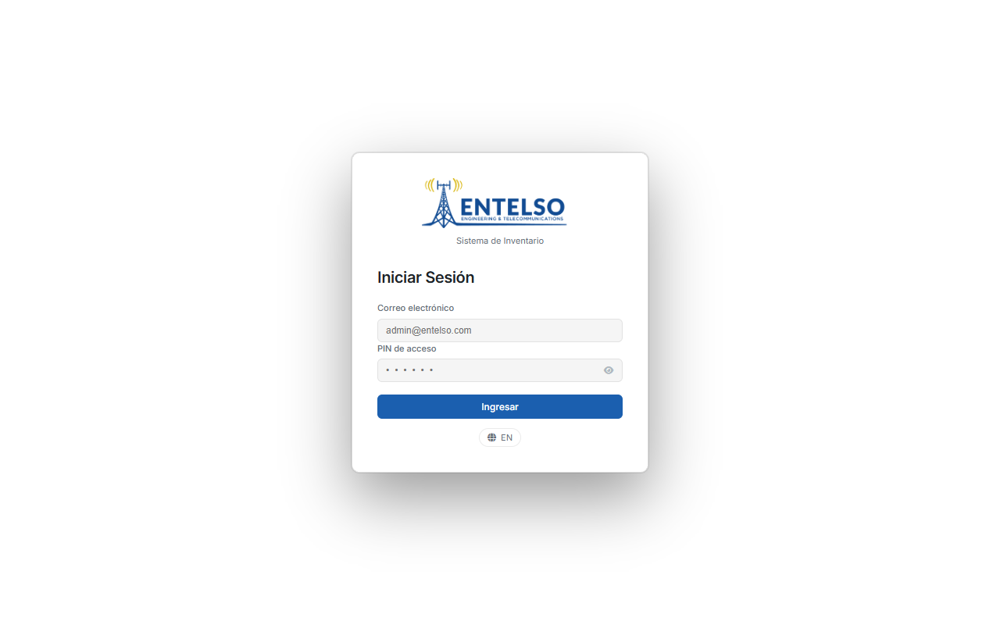

Field Operations Guide (WhatsApp Integration)
This document establishes the Standard Operating Procedures (SOP) for field technicians and warehouse personnel utilizing the Entelso WhatsApp Bot. The system allows real-time inventory tracking, instant checkout, and fault reporting directly from any mobile device without requiring third-party app installations.
Mandatory PIN Authentication & Security
Every field technician is assigned a unique 6-digit Security PIN. This PIN serves as an legally binding digital signature. All inventory transfers, checkouts, and maintenance reports must include your PIN to be authorized by the system. Never share your PIN with unauthorized personnel.
12-Step Meticulous Operational Protocol
1 Initiating Contact & Bot Setup
Before conducting field operations, ensure the Entelso WhatsApp Bot is saved in your mobile contact list and verified.
- Action: Open WhatsApp and send the message
"Hi" or "Start" to the Entelso Bot number.
- System Response: The bot will reply with a greeting and brief syntax instructions for queries and transfers.
- Verification: Ensure your phone number is registered with your team leader. Unregistered numbers will receive read-only access.
2 Asset Query (Locating Equipment)
When you need to locate a specific tool, verify its current condition, or check who it is assigned to before heading to a job site.
- Syntax: Ask in natural language. Examples:
"Where is asset 27367?", "Locate drill DW-20V", or "Status of 88899".
- Output Data: The system returns the exact warehouse or operational zone, assigned technician, status (Operational/Maintenance), and next Test & Tag calibration due date.

Figure 1.1 - Real-time equipment location and status query via WhatsApp Bot.
3 Asset Checkout & Transfer Protocol
Whenever an asset leaves the warehouse, is transferred between job sites, or is handed over to another technician, a formal transfer must be logged immediately.
- Syntax: Specify the asset ID, destination zone or team, and append your PIN. Example:
"Transfer asset 27367 to NSW Zone, PIN 123456".
- Confirmation: The bot validates the PIN against your user profile and updates the database instantaneously. You will receive a confirmation receipt message.
- Rule: The technician who executes the checkout is strictly accountable for the tool until a return or transfer is logged.
4 Damage & Maintenance Reporting
If an asset suffers mechanical failure, electrical damage, or fails safety inspection in the field, it must be flagged immediately to prevent unsafe usage.
- Syntax: Describe the fault and authorize with PIN. Example:
"Asset DW-20V has a damaged power cord. PIN 123456".
- System Action: The asset status immediately shifts to "Under Maintenance" in the global database. The web dashboard highlights the tool in red, alerting warehouse managers to arrange repair or replacement.

Figure 1.2 - Logging field damage to immediately trigger maintenance workflows.
5 Photographic Evidence Submission
For high-value equipment or damaged items, submitting visual proof is mandatory during checkout and return.
- Procedure: Take a clear photograph of the equipment (showing serial numbers or damage) directly within WhatsApp.
- Captioning: In the photo caption, write the asset ID and PIN:
"Evidence for asset 27367, PIN 123456".
- Batch Uploads: If sending multiple photos of the same tool, only the first photo requires the PIN. Subsequent images sent within 5 minutes are auto-attached to the same audit record.
6 QR Code Field Scanning
Most tools are tagged with physical Entelso QR stickers. Scanning speeds up data entry and eliminates typing errors.
- Procedure: Open your smartphone camera or WhatsApp scanner and scan the QR tag on the tool.
- Auto-Routing: The scan automatically opens the Entelso WhatsApp chat with a pre-filled query containing the exact Database ID and Serial Number. Simply hit send or append your PIN to transfer.
Administrative Dashboard Guide (Web Control Panel)
The Entelso Web Dashboard provides centralized governance, analytics, and full lifecycle tracking for administrative staff, warehouse managers, and supervisors. Everything executed in field operations via WhatsApp is reflected here synchronously in real-time.
12-Step Meticulous Operational Protocol (Continued)
7 Dashboard Overview & Global KPI Metrics
Upon logging in, administrators are presented with the executive overview bar at the top of the workspace.
- Total Assets: Consolidated count of all registered physical equipment across all warehouses and field zones.
- Operational vs. Maintenance: Real-time ratios indicating fleet health. A high maintenance count signals potential equipment aging or harsh field conditions.
- Pending Alerts: Highlights tools with expired calibration dates or unverified transfer logs.

Figure 2.1 - The main administrative table displaying live inventory metrics and filtering tools.
8 Advanced Multi-Parameter Filtering & Search
With thousands of tools in circulation, pinpointing specific items requires efficient filtering.
- Search Bar: Enter serial numbers, tool descriptions, or assigned usernames for instant real-time text matching.
- Dropdown Filters: Combine filters to narrow views. For example, select Status: Under Maintenance AND Zone: NSW to view broken tools specifically in New South Wales.
- Resetting Views: Click the clear filter icon to immediately restore the full inventory grid.
9 Asset Profile & Immutable Audit Trail
Every asset maintains a detailed, tamper-proof historical ledger. Click on any row in the main table to open the right-side Asset Details Drawer.
- Media Gallery: Inspect all photographs submitted by field technicians via WhatsApp, timestamped and linked to user profiles.
- Activity History (Audit Trail): An immutable chronological log recording every status change, zone transfer, and maintenance note, including the exact authorizing PIN and timestamp.

Figure 2.2 - The Asset Details Drawer revealing photographic evidence and complete audit trails.
10 Administrative Override & Calibration Tracking
Administrators possess supreme override authority to correct field errors or update statutory testing schedules.
- Edit Mode: Click the pencil icon on any asset row or within the details drawer to unlock field editing.
- Test & Tag Calibration: Update the Last Tested and Next Test Due dates. Tools past their due date automatically trigger compliance warnings across the system.
- Commit Changes: Always click the blue Save Changes button to persist overrides directly into the PostgreSQL database.
11 High-Volume Bulk Operations
When reorganizing warehouses or reallocating entire fleets to a new project team, use bulk execution to avoid repetitive manual updates.
- Selection: Check the boxes (
☑) on the left column of the table for desired assets, or use the master header checkbox to select all filtered items.
- Bulk Actions Bar: A floating dark command bar appears at the top of the grid once items are selected.
- Execution: Choose Change Zone, Change Status, Change Category, or Change Team, select the target parameter, and apply. Dozens of records update simultaneously.

Figure 2.3 - Executing simultaneous multi-asset updates using the floating Bulk Actions bar.
12 Manual Asset Ingestion & System Sync
While field personnel can ingest basic tools, administrators initialize complete, high-value asset profiles.
- Creation Protocol: Click the + Add Asset button in the top header. Complete all mandatory fields including Category, Serial Number, Initial Zone, and Calibration schedule.
- Real-Time Synchronization: All modifications executed in the dashboard are instantly pushed to the API. If a technician queries the tool via WhatsApp 1 second later, they receive the newly updated data.